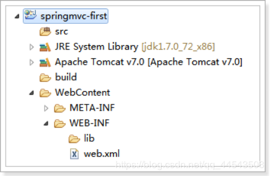
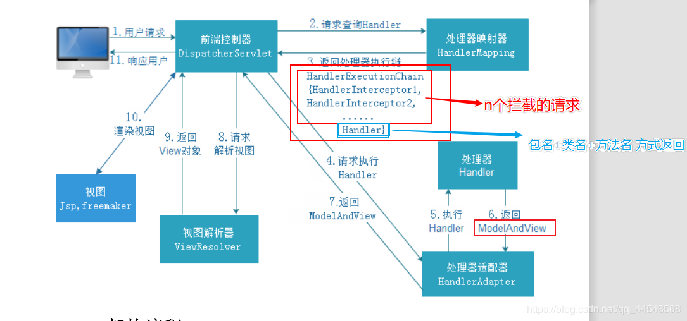

原文连接:https://www.cnblogs.com/yichunguo/p/11939586.html
1.Springmvc入门
1.1.Springmvc是什么
SpringMVC是Spring中的一个组件，目前（2019）在互联网公司用的很多，是必需学习的一门框架技术！SpringMVC用于web层，相当于controller（等价于传统的servlet和struts的action，或者hendler），用来处理用户请求。举个例子，用户在地址栏输入http://网站域名/login，那么springmvc就会拦截到这个请求，并且调用controller层中相应的方法，（中间可能包含验证用户名和密码的业务逻辑，以及查询数据库操作，但这些都不是springmvc的职责），最终把结果返回给用户，并且返回相应的页面（当然也可以只返回json/xml等格式数据）。springmvc就是做前面和后面过程的活，与用户打交道！！springmvc需要有spring的jar包作为支撑才能跑起来,所以学好Spring也是非常重要的！
Spring web mvc和Struts2都属于表现层的框架,它是Spring框架的一部分,我们可以从Spring的整体结构中看得出来,如下图：
1.2.Springmvc处理流程
如下图所示：
1.3.入门程序
需求：使用浏览器显示商品列表
1.3.1.创建web工程
springMVC是表现层框架，需要搭建web工程开发。
创建动态web工程：
输入工程名，选择配置Tomcat（如果已有，则直接使用），如下图：
选择成功，点击Finish，如下图：
选择刚刚设置成功的Tomcat，如下图：
如下图选择web的版本是2.5，可以自动生成web.xml配置文件，
创建效果如下图：

1.3.2.导入jar包
从课前资料中导入springMVC的jar包，如下图：
复制jar到lib目录，工程直接加载jar包，如下图：
1.3.3.加入配置文件
创建config资源文件夹，存放配置文件，如下图：
1.3.3.1.创建springmvc.xml
创建SpringMVC的核心配置文件springmvc.xml
SpringMVC本身就是Spring的子项目，对Spring兼容性很好，不需要做很多配置。
这里只配置一个Controller扫描就可以了，让Spring对页面控制层Controller进行管理。
创建springmvc.xml
<?xml version="1.0" encoding="UTF-8"?>
<beans xmlns="http://www.springframework.org/schema/beans"
xmlns:xsi="http://www.w3.org/2001/XMLSchema-instance" xmlns:p="http://www.springframework.org/schema/p"
xmlns:context="http://www.springframework.org/schema/context"
xmlns:mvc="http://www.springframework.org/schema/mvc"
xsi:schemaLocation="http://www.springframework.org/schema/beans http://www.springframework.org/schema/beans/spring-beans-4.0.xsd
http://www.springframework.org/schema/mvc http://www.springframework.org/schema/mvc/spring-mvc-4.0.xsd
http://www.springframework.org/schema/context http://www.springframework.org/schema/context/spring-context-4.0.xsd">
</beans>1.3.3.2.springmvc.xml中配置处理器适配器HandlerAdapter
因为处理器Handler要根据适配器的要求来开发，所以我们先配置一下适配器HandlerAdapter，在springmvc.xml中配置：
<?xml version="1.0" encoding="UTF-8"?>
<beans xmlns="http://www.springframework.org/schema/beans"
xmlns:xsi="http://www.w3.org/2001/XMLSchema-instance" xmlns:p="http://www.springframework.org/schema/p"
xmlns:context="http://www.springframework.org/schema/context"
xmlns:mvc="http://www.springframework.org/schema/mvc"
xsi:schemaLocation="http://www.springframework.org/schema/beans http://www.springframework.org/schema/beans/spring-beans-4.0.xsd
http://www.springframework.org/schema/mvc http://www.springframework.org/schema/mvc/spring-mvc-4.0.xsd
http://www.springframework.org/schema/context http://www.springframework.org/schema/context/spring-context-4.0.xsd">
<!-- 处理器适配器：HandlerAdapter。所有处理器适配器都实现了HandlerAdapter接口-->
<!-- SimpleControllerHandlerAdapter适配器能执行实现了Controller接口的Handler
所以，现在配置了这个适配器的话，所有的处理器Handler必须要实现Controller接口才行。
-->
<bean class="org.springframework.web.servlet.mvc.SimpleControllerHandlerAdapter" />
</beans>1.3.3.3.springmvc.xml中配置处理器映射器HandlerMapping
1.3.3.4.web.xml中配置视图解析器ViewResolver
配置视图解析器ViewResolver，这样就可以解析jsp了
最终jsp物理地址：前缀+逻辑视图名+后缀
配置视图解析器ViewResolver代码：
<!-- 视图解释器 -->
<bean class="org.springframework.web.servlet.view.InternalResourceViewResolver">
<!-- 前缀 -->
<property name="prefix" value="/WEB-INF/jsp/"/>
<!-- 后缀 -->
<property name="suffix" value=".jsp"/>
</bean>1.3.3.5.web.xml中总体效果代码
web.xml中总体要包含：
1、springmvc.xml的 “头”
2、组件扫描配置处理器handler（controller）
3、处理器适配器HandlerAdapter
4、处理器映射器HandlerMapping
5、视图解析器ViewResolver
web.xml中总体效果代码如下：
<?xml version="1.0" encoding="UTF-8"?>
<beans xmlns="http://www.springframework.org/schema/beans"
xmlns:xsi="http://www.w3.org/2001/XMLSchema-instance" xmlns:p="http://www.springframework.org/schema/p"
xmlns:context="http://www.springframework.org/schema/context"
xmlns:mvc="http://www.springframework.org/schema/mvc"
xsi:schemaLocation="http://www.springframework.org/schema/beans http://www.springframework.org/schema/beans/spring-beans-4.0.xsd
http://www.springframework.org/schema/mvc http://www.springframework.org/schema/mvc/spring-mvc-4.0.xsd
http://www.springframework.org/schema/context http://www.springframework.org/schema/context/spring-context-4.0.xsd">
<!-- 扫描@Controler @Service -->
<context:component-scan base-package="com.gx.springmvc"/>
<!-- 处理器映射器 -->
<bean class="org.springframework.web.servlet.mvc.method.annotation.RequestMappingHandlerMapping"/>
<!-- 处理器适配器 -->
<bean class="org.springframework.web.servlet.mvc.method.annotation.RequestMappingHandlerAdapter"/>
<!-- 视图解释器 -->
<bean class="org.springframework.web.servlet.view.InternalResourceViewResolver">
<!-- 前缀 -->
<property name="prefix" value="/WEB-INF/jsp/"/>
<!-- 后缀 -->
<property name="suffix" value=".jsp"/>
</bean>
</beans>配置文件需要的约束文件，位置如下图：
创建包com.gx.springmvc.controller
1.3.3.6.在web.xml中配置前端控制器DispatcherServlet
配置SpringMVC的前端控制器DispatcherServlet
在web.xml中
<?xml version="1.0" encoding="UTF-8"?>
<web-app xmlns:xsi="http://www.w3.org/2001/XMLSchema-instance"
xmlns="http://java.sun.com/xml/ns/javaee"
xsi:schemaLocation="http://java.sun.com/xml/ns/javaee http://java.sun.com/xml/ns/javaee/web-app_2_5.xsd"
id="WebApp_ID" version="2.5">
<display-name>springmvc-first</display-name>
<welcome-file-list>
<welcome-file>index.html</welcome-file>
<welcome-file>index.htm</welcome-file>
<welcome-file>index.jsp</welcome-file>
<welcome-file>default.html</welcome-file>
<welcome-file>default.htm</welcome-file>
<welcome-file>default.jsp</welcome-file>
</welcome-file-list>
<!-- 配置SpringMVC前端控制器 -->
<servlet>
<servlet-name>springMVC</servlet-name>
<servlet-class>org.springframework.web.servlet.DispatcherServlet</servlet-class>
<!-- 指定SpringMVC配置文件 -->
<!-- SpringMVC的配置文件的默认路径是/WEB-INF/${servlet-name}-servlet.xml -->
<init-param>
<param-name>contextConfigLocation</param-name>
<param-value>classpath:springmvc.xml</param-value>
</init-param>
</servlet>
<servlet-mapping>
<servlet-name>springMVC</servlet-name>
<!-- 设置所有以action结尾的请求进入SpringMVC -->
<url-pattern>*.action</url-pattern>
</servlet-mapping>
</web-app>
从上面的配置中可以看出，和以前学习servlet时候的配置基本上一模一样，前端控制器就相当于一个servlet
重点注意：
1、配置contextConfigLocation：用来加载springmvc的配置文件（配置处理器映射器、适配器等）
不配置contextConfigLocation，则默认加载WEB-INF/[DispatcherServlet的Servlet名字]-servlet.xml
所以处理器映射器和处理器适配器都会配在classpath下我们指定的springmvc.xml中。
2、DispatcherServlet的拦截方式，主要有三种拦截方式，如下：
方式一： *.action ， 可以访问以.action结尾的地址，由DispatcherServlet进行解析。此方法最简单，不会导致静态资源（jpg,js,css）被拦截。【开发中经常使用】
方式二：/ ，所有访问的地址都由DispatcherServlet进行解析，此方法可以实现REST风格的url，很多互联网类型的应用使用这种方式。但是此方法会导致静态文件（jpg,js,css）被拦截后不能正常显示，所以对静态文件的解析需要配置不让DispatcherServlet进行解析。【开发中建议使用】方式三： * ，这样配置是不对的，使用这种配置，最重要转发到一个jsp页面时，仍然会由DispatcherServlet解析jsp地址，不能根据jsp页面找到Handler，会报错。【开发中不建议使用】
1.3.4.加入jsp页面
jsp创建到工程的/WEB-INF/jsp目录下，jsp如下：
<%@ page language="java" contentType="text/html; charset=UTF-8"
pageEncoding="UTF-8"%>
<%@ taglib uri="http://java.sun.com/jsp/jstl/core" prefix="c" %>
<%@ taglib uri="http://java.sun.com/jsp/jstl/fmt" prefix="fmt"%>
<!DOCTYPE html PUBLIC "-//W3C//DTD HTML 4.01 Transitional//EN" "http://www.w3.org/TR/html4/loose.dtd">
<html>
<head>
<meta http-equiv="Content-Type" content="text/html; charset=UTF-8">
<title>查询商品列表</title>
</head>
<body>
<form action="${pageContext.request.contextPath }/item/queryitem.action" method="post">
查询条件：
<table width="100%" border=1>
<tr>
<td><input type="submit" value="查询"/></td>
</tr>
</table>
商品列表：
<table width="100%" border=1>
<tr>
<td>商品名称</td>
<td>商品价格</td>
<td>生产日期</td>
<td>商品描述</td>
<td>操作</td>
</tr>
<c:forEach items="${itemList }" var="item">
<tr>
<td>${item.name }</td>
<td>${item.price }</td>
<td><fmt:formatDate value="${item.createtime}" pattern="yyyy-MM-dd HH:mm:ss"/></td>
<td>${item.detail }</td>
<td><a href="${pageContext.request.contextPath }/itemEdit.action?id=${item.id}">修改</a></td>
</tr>
</c:forEach>
</table>
</form>
</body>
</html>1.3.5.实现显示商品列表页
1.3.5.1.创建pojo
分析页面，查看页面需要的数据，如下图：
创建商品pojo
public class Item {
// 商品id
private int id;
// 商品名称
private String name;
// 商品价格
private double price;
// 商品创建时间
private Date createtime;
// 商品描述
private String detail;
创建带参数的构造器
set/get。。。
}1.3.5.2.创建普通java类ItemController
1、ItemController是一个普通的java类，不需要实现任何接口。
2、需要在类上添加@Controller注解，在1.3.3.1.创建springmvc.xml中已经配置 扫描了Controller包，所以直接交由Spring管理
3、在方法上面添加@RequestMapping注解，里面指定请求的url。其中“.action”可以加也可以不加。
4、由于是入门程序，就暂时不连接数据库，modelAndView.addObject给其页面设置并赋值（ 利用集合）
@Controller
public class ItemController {
// @RequestMapping：里面放的是请求的url，和用户请求的url进行匹配
// action可以写也可以不写
// 创建页面需要显示的商品数据
@RequestMapping(value = "/item/itemlist.action")
public ModelAndView itemList(){
List<Items> list= new ArrayList<Items>();
list.add(new Items (1,"XiaoMi 9",233f,new Date(),"hhh1"));
list.add(new Items (2,"XiaoMi 8",233f,new Date(),"hhh1"));
list.add(new Items (3,"XiaoMi 7",233f,new Date(),"hhh1"));
list.add(new Items (4,"XiaoMi 6",233f,new Date(),"hhh1"));
// 创建ModelAndView，用来存放数据和视图
ModelAndView modelAndView = new ModelAndView();
// 设置数据到模型中
modelAndView.addObject("itemList", list); //第一个参数要对应JSP中的${value}
// 设置视图jsp，需要设置视图的物理地址
modelAndView.setViewName("/WEB-INF/jsp/itemList.jsp");
return modelAndView;
}
}1.3.6.启动项目测试
启动项目，浏览器访问地址
http://localhost:8080/springMVC/item/itemlist.action
效果如下图：
1.3.7.org.springframework.web.servlet.DispatcherServlet noHandlerFound
当然并不是每个小白都能一次就测试失败的，很幸运，你就是万中无一的小白QAQ，我没猜错的话，兄嘚，你报了org.springframework.web.servlet.DispatcherServlet noHandlerFound
警告: No mapping found for HTTP request with URI [/springMVC/iteam/itemlist.action] in DispatcherServlet with name 'springMVC'
如果异常了，95%是这个异常，不要问我为什么，厂长是我表锅..咳咳，这个异常就比较易出现，我就举几个出现该异常的情况吧，中枪的自觉双击关注评论666
1、在 web.xml 中对 springDispatcherServlet 的配置出错
2、Handler 类没有加上 @Controller 注解，处理器将不会扫描该类是否使用了 @RequestMapping 注解。
3、@RequestMapping 的值和在浏览器输入的地址不一致
4、访问静态资源时，请求会被 DispatcherServlet 拦截器拦截
5、检查配置文件，一定是有些地方路径没有对应上
如果入门程序成功了，那么恭喜恭喜，请进行下一步的探索
2.springMVC架构
2.1springMVC的架构图
咳咳..兄台你是不是很好奇上面的springMVC程序为什么可以那样用呢？好奇就对了，那就需要分析一下springMVC的架构图了，嘤嘤嘤QAQ

2.2.架构流程
1、用户发送请求至前端控制器DispatcherServlet
2、DispatcherServlet收到请求调用HandlerMapping处理器映射器。
3、处理器映射器根据请求url找到具体的处理器，生成处理器对象及处理器拦截器(如果有则生成)一并返回给DispatcherServlet。
4、DispatcherServlet通过HandlerAdapter处理器适配器调用处理器
5、执行处理器(Controller，也叫后端控制器)。
6、Controller执行完成返回ModelAndView
7、HandlerAdapter将controller执行结果ModelAndView返回给DispatcherServlet
8、DispatcherServlet将ModelAndView传给ViewReslover视图解析器
9、ViewReslover解析后返回具体View
10、DispatcherServlet对View进行渲染视图（即将模型数据填充至视图中）。
11、DispatcherServlet响应用户
2.3.springmvc组件说明
在springmvc的各个组件中，处理器映射器、处理器适配器、视图解析器称为springmvc的三大组件。
以下组件通常使用框架提供实现：
DispatcherServlet：前端控制器
用户请求到达前端控制器，它就相当于mvc模式中的c，dispatcherServlet是整个流程控制的中心，由它调用其它组件处理用户的请求，dispatcherServlet的存在降低了组件之间的耦合性。
HandlerMapping：处理器映射器
HandlerMapping负责根据用户请求url找到Handler即处理器，springmvc提供了不同的映射器实现不同的映射方式，例如：配置文件方式，实现接口方式，注解方式等。
Handler：处理器
Handler 是继DispatcherServlet前端控制器的后端控制器，在DispatcherServlet的控制下Handler对具体的用户请求进行处理。
由于Handler涉及到具体的用户业务请求，所以一般情况需要程序员根据业务需求开发Handler。
HandlAdapter：处理器适配器
通过HandlerAdapter对处理器进行执行，这是适配器模式的应用，通过扩展适配器可以对更多类型的处理器进行执行。
下图是许多不同的适配器，最终都可以使用usb接口连接
ViewResolver：视图解析器
View Resolver负责将处理结果生成View视图，View Resolver首先根据逻辑视图名解析成物理视图名即具体的页面地址，再生成View视图对象，最后对View进行渲染将处理结果通过页面展示给用户。
View：视图
springmvc框架提供了很多的View视图类型的支持，包括：jstlView、freemarkerView、pdfView等。我们最常用的视图就是jsp。
一般情况下需要通过页面标签或页面模版技术将模型数据通过页面展示给用户，需要由程序员根据业务需求开发具体的页面。
需要用户开发的组件有handler、view
2.4.默认加载的组件（了解）
我们没有做任何配置，就可以使用这些组件
因为框架已经默认加载这些组件了，配置文件位置如下图：
代码如下：
# Default implementation classes for DispatcherServlet's strategy interfaces.
# Used as fallback when no matching beans are found in the DispatcherServlet context.
# Not meant to be customized by application developers.
org.springframework.web.servlet.LocaleResolver=org.springframework.web.servlet.i18n.AcceptHeaderLocaleResolver
org.springframework.web.servlet.ThemeResolver=org.springframework.web.servlet.theme.FixedThemeResolver
org.springframework.web.servlet.HandlerMapping=org.springframework.web.servlet.handler.BeanNameUrlHandlerMapping,\
org.springframework.web.servlet.mvc.annotation.DefaultAnnotationHandlerMapping
org.springframework.web.servlet.HandlerAdapter=org.springframework.web.servlet.mvc.HttpRequestHandlerAdapter,\
org.springframework.web.servlet.mvc.SimpleControllerHandlerAdapter,\
org.springframework.web.servlet.mvc.annotation.AnnotationMethodHandlerAdapter
org.springframework.web.servlet.HandlerExceptionResolver=org.springframework.web.servlet.mvc.annotation.AnnotationMethodHandlerExceptionResolver,\
org.springframework.web.servlet.mvc.annotation.ResponseStatusExceptionResolver,\
org.springframework.web.servlet.mvc.support.DefaultHandlerExceptionResolver
org.springframework.web.servlet.RequestToViewNameTranslator=org.springframework.web.servlet.view.DefaultRequestToViewNameTranslator
org.springframework.web.servlet.ViewResolver=org.springframework.web.servlet.view.InternalResourceViewResolver
org.springframework.web.servlet.FlashMapManager=org.springframework.web.servlet.support.SessionFlashMapManager
2.5.组件扫描器
组件扫描器主要作用：使用组件扫描器省去在spring容器配置每个Controller类的繁琐。
使用< context:component-scan >自动扫描标记@Controller的控制器类，
组件扫描器在springmvc.xml配置文件中配置如下：
<!-- 配置controller扫描包，多个包之间用,分隔 -->
<context:component-scan base-package="cn.itcast.springmvc.controller" />2.6.注解映射器和适配器
2.6.1.配置处理器映射器
注解式处理器映射器，对类中标记了@ResquestMapping的方法进行映射。根据@ResquestMapping定义的url匹配@ResquestMapping标记的方法，匹配成功返回HandlerMethod对象给前端控制器。
HandlerMethod对象中封装url对应的方法Method。
从spring3.1版本开始，废除了DefaultAnnotationHandlerMapping的使用，推荐使用RequestMappingHandlerMapping完成注解式处理器映射。
在springmvc.xml配置文件中配置如下：
<!-- 配置处理器映射器 -->
<bean class="org.springframework.web.servlet.mvc.method.annotation.RequestMappingHandlerMapping" />注解描述：
@RequestMapping：定义请求url到处理器功能方法的映射
2.6.2.配置处理器适配器
注解式处理器适配器，对标记@ResquestMapping的方法进行适配。
从spring3.1版本开始，废除了AnnotationMethodHandlerAdapter的使用，推荐使用RequestMappingHandlerAdapter完成注解式处理器适配。
在springmvc.xml配置文件中配置如下：
<!-- 配置处理器适配器 -->
<bean class="org.springframework.web.servlet.mvc.method.annotation.RequestMappingHandlerAdapter" />
2.6.3.注解驱动
直接配置处理器映射器和处理器适配器比较麻烦，可以使用注解驱动来加载。
SpringMVC使用< mvc:annotation-driven >自动加载RequestMappingHandlerMapping和RequestMappingHandlerAdapter
可以在springmvc.xml配置文件中使用< mvc:annotation-driven >替代注解处理器和适配器的配置。
<!-- 注解驱动 -->
<mvc:annotation-driven />2.7.视图解析器
视图解析器使用SpringMVC框架默认的InternalResourceViewResolver，这个视图解析器支持JSP视图解析
在springmvc.xml配置文件中配置如下：
<!-- Example: prefix="/WEB-INF/jsp/", suffix=".jsp", viewname="test" ->
"/WEB-INF/jsp/test.jsp" -->
<!-- 配置视图解析器 -->
<bean
class="org.springframework.web.servlet.view.InternalResourceViewResolver">
<!-- 配置逻辑视图的前缀 -->
<property name="prefix" value="/WEB-INF/jsp/" />
<!-- 配置逻辑视图的后缀 -->
<property name="suffix" value=".jsp" />
</bean>逻辑视图名需要在controller中返回ModelAndView指定，比如逻辑视图名为ItemList，则最终返回的jsp视图地址: “WEB-INF/jsp/itemList.jsp”
最终jsp物理地址：前缀+逻辑视图名+后缀
2.7.1.修改Handler (ItemController )
修改ItemController中设置视图的代码
@RequestMapping：里面放的是请求的url，和用户请求的url进行匹配
// action可以写也可以不写
package com.gx.springmvc;
import java.util.ArrayList;
import java.util.Date;
import java.util.List;
import org.springframework.stereotype.Controller;
import org.springframework.web.bind.annotation.RequestMapping;
import org.springframework.web.servlet.ModelAndView;
import com.gx.po.Items;
@Controller
public class ItemController {
@RequestMapping(value = "/item/itemlist.action")
public ModelAndView itemList(){
List<Items> list= new ArrayList<Items>();
list.add(new Items (1,"XiaoMi 9",233f,new Date(),"hhh1"));
list.add(new Items (2,"XiaoMi 8",233f,new Date(),"hhh1"));
list.add(new Items (3,"XiaoMi 7",233f,new Date(),"hhh1"));
list.add(new Items (4,"XiaoMi 6",233f,new Date(),"hhh1"));
ModelAndView mav= new ModelAndView();
mav.addObject("itemList",list);
mav.setViewName("itemList");
return mav;
}
}
2.7.2.效果
效果和之前一样，如下图：
到这里兄嘚，springMVC的入门程序以及SpringMVC架构就有了一定的了解！是不是觉得很有成就感
啊? 拉倒吧! 我都不好意思说了.但是我是阻止不了你骄傲的心. 那就顶我,让我感受感受你的骄傲!哈哈
哈...哈哈..啊..咳咳..嗝气了QAQ...
2.8结语
我希望各位最好是按照以上思路自己去动手敲一遍，走一个流程，切勿眼高手低（你会发现一动手就bug成堆），学编程最忌讳的就是眼高手低！！！
如果本文对你有一点点帮助，那么请点个赞呗，谢谢~
最后，若有不足或者不正之处，欢迎指正批评，感激不尽！如果有疑问欢迎留言，绝对第一时间回复！
欢迎各位关注我的公众号，一起探讨技术，向往技术，追求技术，说好了来了就是盆友喔...